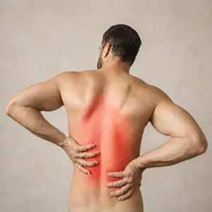

Het posteromediale complex en posterolaterale complex (PLC) bieden stabiliteit tegen rotatie- en varus-/valguskrachten. Letsel aan het PMC komt vaak voor in combinatie met letsel aan de VKB of AKB of meniscus.
Het PMC bestaat uit:
De patiënt ligt in ruglig met de knie gestrekt.

De uitvoering van de test voor opening van de mediale gewrichtslijn in 0° is identiek aan die van de valgusstresstest in 20 graden, alleen wordt de knie nu in 0° extensie getest.
De fysio maakt een valgiserende beweging in 0 graden in de knie van de patiënt.
De test is positief wanneer er een verschil met de contralaterale knie wordt waargenomen in bewegingsuitslag en eindgevoel.
De patiënt ligt in ruglig met de knie 90° gebogen en de voet in 15° exorotatie (of maximale exorotatie). De fysiotherapeut plaatst de duimen op de tuberositas tibiae.
De fysiotherapeut trekt het onderbeen rustig naar voren, waarbij de nadruk ligt op de voorwaartse beweging van de tibia ten opzichte van het femur. De test is positief wanneer een verschil met de contralaterale knie wordt waargenomen in bewegingsuitslag en/of eindgevoel.
De patiënt ligt in ruglig op de onderzoeksbank met het been volledig in extensie. De therapeut pakt de voet en de buitenkant van de knie vast.
De fysiotherapeut draait de voeten in exorotatie terwijl de knie in 30° flexie wordt gehouden. De test is positief wanneer er een vergrote exorotatie is ten opzichte van de contralaterale knie.
Het posteromediale complex en posterolaterale complex (PLC) bieden stabiliteit tegen rotatie- en varus-/valguskrachten. Letsel aan het PLC leidt vaak tot posterolaterale instabiliteit, meestal in combinatie met LCL- of kruisbandletsel. Diagnostiek vereist klinische tests (zoals de dial test) en MRI. Behandeling is vaak operatief, zeker bij chronische instabiliteit.
Het PLC bestaat uit:
De fysiotherapeut gaat op de behandeltafel zitten en legt het been van de patiënt op zijn schoot.
De fysiotherapeut voert passief de volgende beweging uit:
Bij een positieve test is er een verschil met de contralaterale knie waargenomen bij bewegingsuitslag en eindgevoel.
De patiënt ligt op de buik met de knieën tegen elkaar aan.
De fysiotherapeut staat aan het eind van de onderzoekstafel, omvat de voeten en houdt deze in dorsaalflexie vast. Dit omdat de voorkant van de talus breder is, wat zorgt voor een betere gewrichtssluiting in de enkel. Hiermee kan je specifieker de knie testen, in plaats van dat de enkel meebeweegt.
De fysiotherapeut draait beide onderbenen in exorotatie en beoordeelt hierbij de bewegingsuitslag van de voeten. De test wordt tweemaal uitgevoerd, eenmaal met de knie in 30° flexie, de tweede keer met de knie in 90° flexie.
De gradering voor het verschil in bewegingsuitslag met de contralaterale zijde is als volgt: